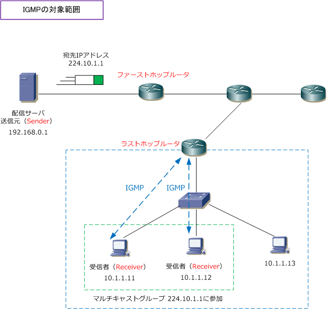

IGMP ( Internet Group Management Protocol )
IGMPとは
IGMPは、ホスト（Receiver）がルータ（ラストホップルータ）に対して、マルチキャストグループへの 参加、維持、離脱を通知するためのプロトコルです。IGMPにより、マルチキャストルータはLAN上での どのホストがマルチキャストグループのメンバー（Receiver）であるか判断することが出来ます。そして ホストは自分がどのマルチキャストグループのメンバーであるのかを通知できます。下図の青が範囲です。

Receiverが、自身のマルチキャストグループへの参加をIGMPにより、ラストホップルータに通知することで ラストホップルータはReceiverの存在を認識して、PIM等のマルチキャストルーティングプロトコルと連携を 行ってディストリビューションツリーを作成して、マルチキャストパケットがReceiverへ届くようになります。
なお、一般的でありませんが、マルチキャストのSenderとReceiverが同一セグメントに配置されている場合 Senderがマルチキャストフレームをフラッディングするだけで、Receiverが受信できてマルチキャスト通信 を成立させられるので、当然ですが「マルチキャストルーティングプロトコル」も「IGMP」も必要ないです。
IGMPには、IGMPv1、IGMPv2、IGMPv3の大きく3つのバージョンがあります。バージョンごとに、動作が 異なるため、次ページ以降では各バージョンごとのIGMPの動作について解説します。